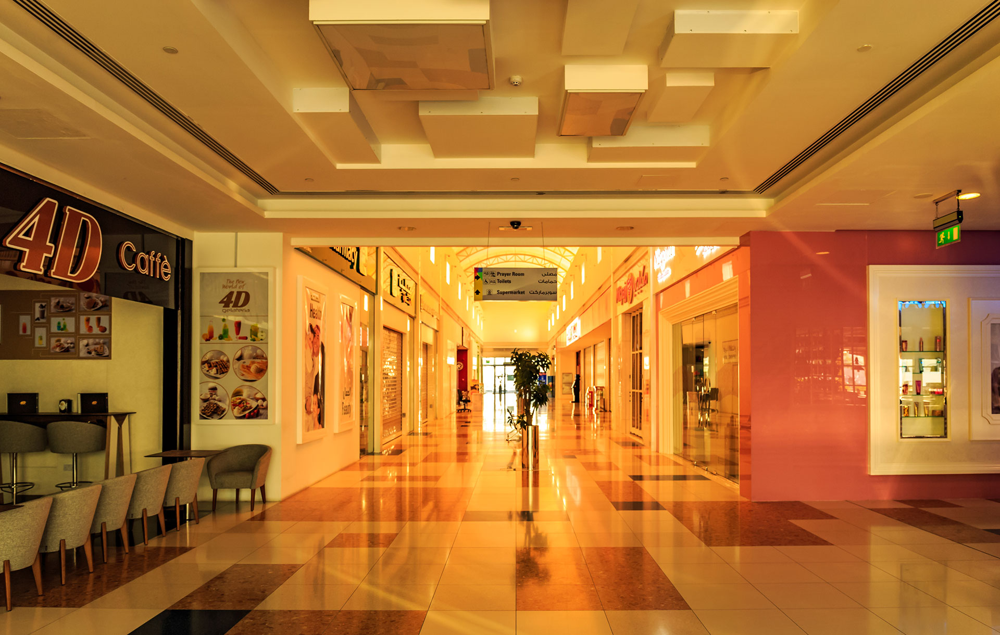
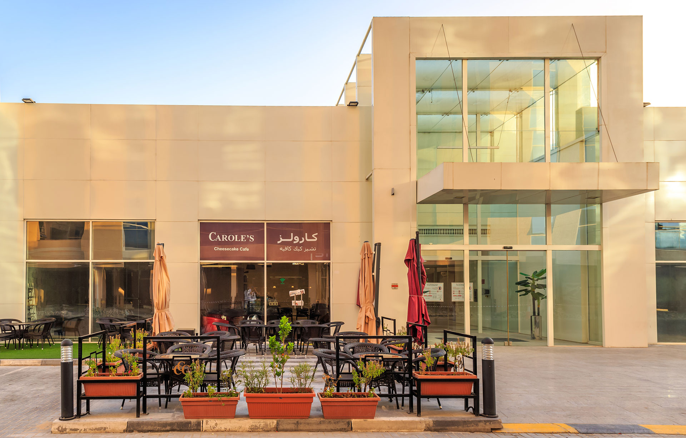

Citylife Mall, Jurf
Mixed-Use & Retail · UAE · 2013
City Life Mall located in 1,2, 3 Ajman, is a community mall that primarily caters to the residents of that area. This ground structure mall is equipped with a supermarket at the center and surrounded with several retails shops that further opens out to outdoor cafes, with exterior seating facilities along the edge. The primary entrance portal is a glass cube enclosed within rectilinear frames, which leads to a linear, main circulation spine that connects the supermarket to the shops along the periphery. The overall façade is divided hierarchically into volumes that visually defines the functions. Ground parking spaces are given in the front and back of the mall which is the connected through a service road via the main road.
The architectural concept emerged from a careful reading of the site's orientation, prevailing wind patterns, and the client's vision for a landmark that would serve the community for decades. The massing strategy creates a dialogue between solid and void, allowing natural light to penetrate deep into the floor plates while maintaining thermal comfort in the UAE's demanding climate.
Material selections were chosen for their durability, low maintenance, and aesthetic contribution to the neighbourhood's evolving urban fabric.


